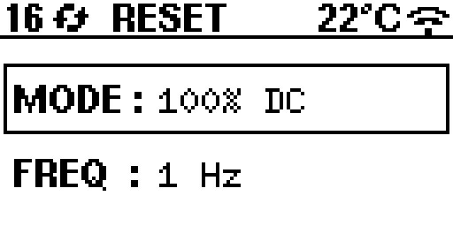
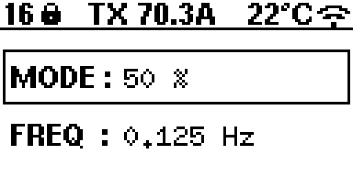
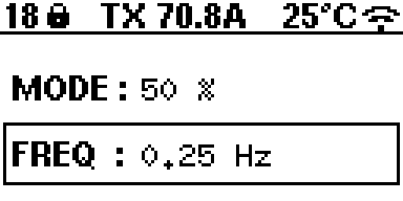
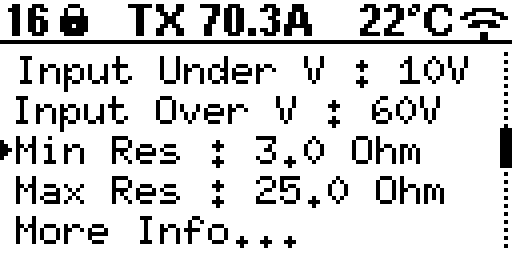
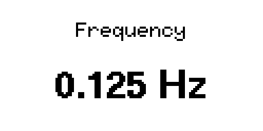
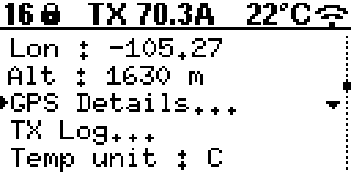
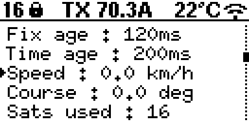

Basic Use and Menu Structure
Main Page Overview
The main page provides a quick view of essential information:
Selected Mode
Frequency
{kind=link}

The top status area shows:
Number of satellites (GPS fix quality)
Sync status (searching vs locked)
ZT-100 ID
Wi-Fi status
Button Basics
Long-press is about 2 seconds.
UP (short press): Move up in menus or increase a value.
DOWN (short press): Move down in menus or decrease a value.
SELECT (short press): Toggle selection on the main screen or select a menu item.
UP/DOWN (long press): Adjust Mode on the main screen or make fine changes in the value editor.
SELECT (long press): Enter/exit menus or confirm a value edit.
RESET: Starts the reset/arm sequence, or stops transmit.
TRANSMIT: Starts transmit during the arm window, or stops transmit.
Mode Adjustment on Main Page
To switch modes on the main page:
Make sure MODE is selected (use SELECT).
Press and hold UP or DOWN for about 2 seconds.
{kind=link}

Frequency Adjustment on Main Page
To adjust frequency on the main page:
Make sure FREQUENCY is selected (use SELECT).
Use UP/DOWN to increase or decrease the frequency.
{kind=link}

Modes
100% DC: Full frequency range.
50%: Limited frequency range (currently 0.0078125 Hz to 32 Hz).
Custom: User-defined sequence mode (file upload via web app).
MMR 5Hz: Fixed 5 Hz mode (frequency selection hidden).
In Basic XMT mode, only 100% DC and 50% are available. In Advanced XMT mode, all four modes are available. You can switch between Basic and Advanced either from the device menu (More Info -> XMT Mode) or from the web interface More panel.
Menu Options
From the MENU screen you can:
Adjust Input Under Voltage and Input Over Voltage limits.
Adjust Minimum Resistance and Maximum Resistance limits.
Open More Info… for status and system tools.
{kind=link}

Value Editor
Selecting a limit opens the value editor:
UP/DOWN (short press): Coarse steps.
UP/DOWN (long press): Fine steps.
SELECT (short press): Toggle coarse/fine mode.
SELECT (long press): Save and return.
{kind=link}

More Info Screen
The More Info screen shows status and configuration:
XMT Mode: Toggle Basic/Advanced.
GPS Time / GPS Date
Latitude / Longitude / Altitude
GPS Details…: Opens the GPS details list.
TX Log…: Opens the transmit event log.
Temp unit: C or F.
Version: Firmware version.
ZT-100 #: Instrument ID.
Screen Light: On/Off.
Wi-Fi status: On/Off.
IP: Shown when Wi-Fi is enabled.
{kind=link}

GPS Details Screen
The GPS details list includes:
HDOP
Fix age and time age
Speed and course
Satellites used
GPS satellites and GLONASS satellites
PPS count
{kind=link}

Transmit Workflow (Step-by-Step)
Press RESET to start the reset/arm sequence.
The system checks all protection and status conditions.
If no errors are reported, the screen shows RDY (arm window).
Press TRANSMIT during the arm window.
The system measures load resistance (MOR).
If the load is in range, transmit begins. If not, ORE is shown.
Press TRANSMIT or RESET to stop transmit and return to safe state.
Status Labels (Top Bar)
The top bar shows a short label for the transmit state. Common labels are:
ZT-100: Boot/initial state.
RESET: Reset sequence active or waiting in safe state.
RDY: Armed window open for transmit.
MOR: Measuring load resistance.
ORE: Load resistance out of range or timed out.
TRANSMIT: Transmit active.
STOPPED: Transmit stopped by operator.
ERR: Shared error line asserted (failsafe wait state).
R x.x: Last measured resistance shown during transmit.
TX x.xA: RMS current shown during transmit.
Error Labels (Subsystem Codes)
Error labels appear in the top bar and in the TX Log. Any error forces the system back to a safe wait state.
Module codes:
SM = Safety system
MM = Monitoring system
GM = Gate driver system
FM = Cooling/fan system
Safety System (SM) errors:
SM EMER: Emergency stop input active.
SM GIUV: Global input under-voltage triggered.
SM GIOV: Global input over-voltage triggered.
SM UDIUV: User-defined under-voltage limit triggered.
SM UDIOV: User-defined over-voltage limit triggered.
SM LERR: Safety system local error.
SM ERR: Other safety system error.
Monitoring System (MM) errors:
MM OVP: Over-voltage positive.
MM OVN: Over-voltage negative.
MM OCP: Over-current positive.
MM OCN: Over-current negative.
MM LERR: Monitoring system local error.
MM ERR: Other monitoring system error.
Gate Driver System (GM) errors:
GM OTMP: Gate driver over-temperature.
GM LERR: Gate driver local error.
Cooling/Fan System (FM) errors:
FM LERR: Cooling/fan system local error.